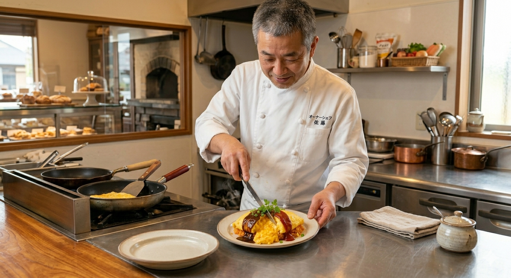
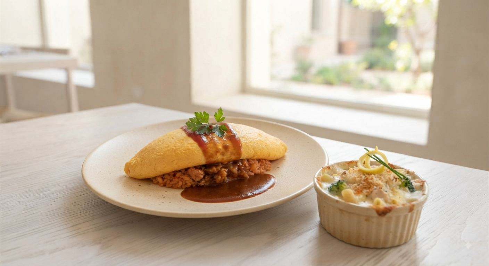
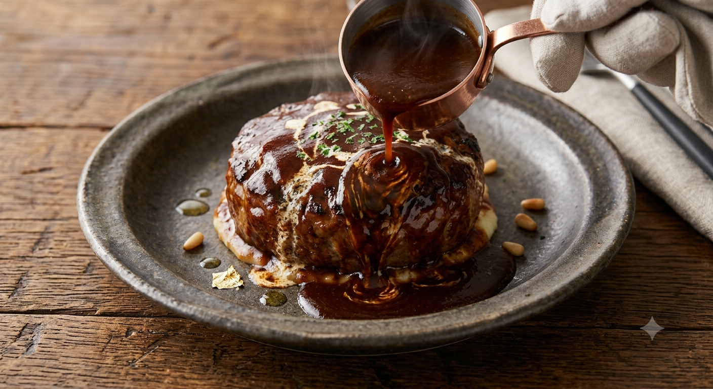

Story of Chef
震災を越え、紫波町で
震災を越え、紫波町で
愛される一皿を。
「紫波町といえば、ルッシュのオムライス」そう言っていただける店を目指し、2018年に夫婦でオープンしました。結婚式場やロシア料理店で培った技術を、この町の人たちの「笑顔」のために使いたい。温かな常連様に支えられ、一皿一皿に心を込めて作り続けています。
オーナーシェフ 小松 大志
厳選された卵3個を使用した黄金の「ふわとろ」オムライスに、
ロシア料理店で7年修行したシェフが紡ぎなす濃厚ビーフストロガノフを。

看板メニュー「オムガノフ」
「美味しいものは食べたいけれど、忙しくて時間はかけられない」
「日常の中で、ほんの少しだけ贅沢なご褒美を味わいたい」
忙しい毎日に追われるあなたにこそ、ルッシュの『オムガノフ』で最高の笑顔になってほしい。そんな想いからこの一皿は生まれました。

味付けは塩コショウのみ。だからこそ、熟練のシェフによる絶妙な火入れの技術が際立ちます。スプーンを入れた瞬間、バターの芳醇な香りと共に溢れ出す幸せの食感をお楽しみください。
生クリームのコクと、深みのあるデミグラスソースが織りなす本格ビーフストロガノフ。ロシア料理店で7年修行した店主ならではの、お肉やキノコがしっかり入った贅沢な味わいです。

「誕生日や記念日に、ルッシュ自慢の味をゆっくり楽しみたい」そんな声にお応えする、軽めのペアコースが新登場。
季節の新鮮野菜を使った彩り豊かな前菜と、優しい味わいの自家製スープでコースの幕開け。
看板メニューの「オムガノフ」または厳選肉料理からその日の気分でお選びいただけます。
大人気の自家製チーズスフレ等（日替わり）と、香ばしい自家製ホットコーヒーでゆったりとした余韻を。

「紫波町といえば、ルッシュのオムライス」そう言っていただける店を目指し、2018年に夫婦でオープンしました。結婚式場やロシア料理店で培った技術を、この町の人たちの「笑顔」のために使いたい。温かな常連様に支えられ、一皿一皿に心を込めて作り続けています。
オーナーシェフ 小松 大志
「こんなに美しいオムライス、初めて見ました。バターの香るふわとろ卵と、濃厚なビーフストロガノフのバランスが最高！忙しい昼下がりでしたが、一気に幸せな気持ちになりました。」
— 30代 女性 / 常連様
「メニューが絞られていて提供が早いのも嬉しいポイント。座席数はこじんまりしていますが、それ以上の感動と価値がある名店です。また絶対リピートします！」
— 40代 男性 / 会社員様